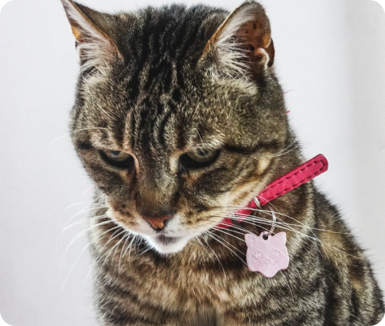

Realice estudios seriados de heces cada cuatro o seis meses para identificar parasitosis, si no se puede, desparasite en ese tiempo a sus perros, aunque no salgan a la calle,
Pregunte a su veterinario acerca de las enfermedades más comunes de la raza que posea y cómo puede diagnosticarlas a tiempo.